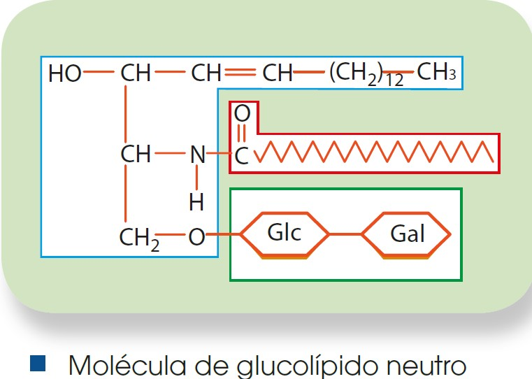
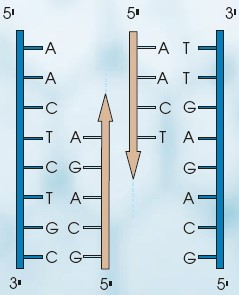
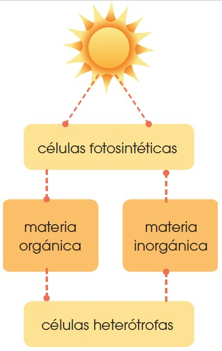

11 Glúcidos
Como sabemos, las biomoléculas orgánicas son aquellas moléculas que forman parte de los seres vivos y están constituidas por un esqueleto de carbono. Estas son los glúcidos, lípidos, proteínas y ácidos nucleicos. A continuación, veremos las características, clasificación, propiedades y funciones biológicas de cada uno de ellos.
Los glúcidos son biomoléculas orgánicas formadas por carbono, oxígeno e hidrógeno. Constituyen un grupo de sustancias muy extenso y variado y en algunas ocasiones los conocemos como hidratos de carbono o, simplemente, azúcares. Químicamente son polihidroxialdehídos o polihidroxicetonas (un grupo aldehído o un grupo cetona y numerosos grupos hidroxilo) o bien compuestos formados por la unión de moléculas de este tipo.
Solemos distinguir tres grandes grupos de glúcidos: los monosacáridos, los oligosacáridos y los polisacáridos.
11.1 Monosacáridos
Los monosacáridos son los glúcidos más sencillos, formados por una cadena de entre tres y siete átomos de carbono. Según este número, los clasificamos en triosas, tetrosas, pentosas, hexosas o heptosas.
Los monosacáridos, por lo general, son solubles en agua, blancos y de sabor dulce. Son las sustancias que utiliza la célula para obtener energía. Cuando ocurre una reacción química, se produce la ruptura de unos enlaces y la formación de enlaces nuevos. Si los enlaces que se rompen tienen más energía que los que se forman, se libera energía. Esto ocurre cuando los monosacáridos reaccionan con el oxígeno, generan moléculas con enlaces de menor energía y, por lo tanto, producen energía.
Los monosacáridos poseen una fórmula química (CH2O)n; sustituimos n por el número de carbonos. Por ejemplo, una hexosa tiene seis átomos de carbono; su fórmula será (CH2O)6 o lo que es lo mismo C6H12O6, ya que contienen seis átomos de carbono, doce átomos de hidrógeno y seis átomos de oxígeno.
El monosacárido más representativo es la glucosa. Está formada por seis átomos de carbono y es utilizada como fuente de energía básica por muchos seres vivos. Es el monosacárido más abundante en la naturaleza y se encuentra en la fruta y en la miel. Otros monosacáridos importantes son la ribosa, la fructosa o la galactosa.
11.2 Oligosacáridos
Los oligosacáridos son glúcidos compuestos por la unión de dos a diez monosacáridos, los cuales se unen mediante enlaces O-glucosídicos. Al igual que los monosacáridos, son dulces y solubles en agua. Los oligosacáridos formados por dos monosacáridos reciben el nombre de disacáridos; y los constituidos por tres, trisacáridos.
El enlace O-glucosídico se realiza entre el carbono de un grupo hidroxilo de un monosacárido y el carbono del grupo aldehído o cetona del siguiente monosacárido, con lo que se crea, además, una molécula de agua.
De la misma forma que podemos formar un enlace O-glucosídico, este puede romperse mediante una reacción de hidrólisis. Añadiendo H2O, un disacárido puede dar lugar a dos monosacáridos libres. Esta reacción de hidrólisis provoca la ruptura del enlace O-glucosídico y, por tanto, la liberación de energía. Por esto, los oligosacáridos, al igual que los monosacáridos, cumplen la función de aporte energético en los seres vivos.
La mayoría de los oligosacáridos representativos en los organismos vivos son disacáridos, entre los que destacan la sacarosa (glucosa + fructosa) que obtenemos de la caña de azúcar o la remolacha, y es el azúcar que consumimos habitualmente; la lactosa (galactosa + glucosa) que se encuentra exclusivamente en la leche o la maltosa (2 glucosas). Sus funciones son siempre energéticas.
11.3 Polisacáridos
Una sustancia formada por varias moléculas menores la conocemos como polímero, mientras que cada una de las pequeñas moléculas que forman el polímero reciben el nombre de monómero. Esto ocurre en el caso de los polisacáridos, compuestos por un gran número de monosacáridos unidos entre ellos por enlaces O-glucosídicos.
Los polisacáridos se forman como largas cadenas lineales o ramificadas. Si en estas cadenas se repite siempre el mismo monosacárido hablamos de un homopolisacárido, mientras que si intervienen distintos tipos de unidades, hablamos de un heteropolisacárido.
Al contrario que los monosacáridos y los oligosacáridos, los polisacáridos no tienen sabor dulce ni son solubles en agua. Por este motivo, cumplen principalmente un papel estructural en los seres vivos, aunque también actúan a menudo como reserva de energía.
Los polisacáridos con función de reserva más representativos son el almidón y el glucógeno. El almidón es la sustancia de reserva energética propia de las plantas y se encuentra de forma abundante en las semillas y los tubérculos. Está formado por la unión de miles de moléculas de glucosa. Por otro lado, el glucógeno cumple la misma función que el almidón, pero en los animales. Se encuentra de manera muy abundante tanto en el hígado como en los músculos. Al igual que el almidón, el glucógeno es un polímero de miles de moléculas de glucosa. La diferencia entre ellos es que el almidón tiene ramificaciones cada 24-30 glucosas mientras que las ramificaciones en el glucógeno ocurren cada 8-12.
En cuanto a los polisacáridos con función estructural, los más representativos son la celulosa y la quitina. La celulosa forma la pared celular de las células vegetales y es un polímero formado por glucosa. En este caso, varias cadenas se unen entre sí por puentes de hidrógeno, lo que otorga mayor estabilidad al polisacárido. Por su parte, la quitina forma los exoesqueletos de algunos animales como insectos y crustáceos, así como la pared de las células de los hongos; y se trata de un polisacárido de N-acetilglucosamina.
12 Lípidos
Los lípidos son un grupo de biomoléculas orgánicas, compuestas por carbono, hidrógeno y oxígeno, aunque en ocasiones pueden presentar otros elementos como nitrógeno, fósforo o azufre.
Constituyen un grupo muy amplio con gran diversidad de estructuras y funciones, pero todos tienen algo en común de vital importancia para los organismos vivos: no son solubles en agua.
Al ser un grupo tan extenso y variado, no existe una clasificación clara para los lípidos, y los podemos catalogar de distintas maneras en función de distintos criterios. La división más común dentro de este grupo es la de los lípidos saponificables e insaponificables.
12.1 Lípidos saponificables
La saponificación es un proceso químico en el que un lípido puede dar un jabón. A los lípidos que pueden provocar este tipo de reacción los conocemos como lípidos saponificables, y dentro de ellos encontramos lípidos saponificables simples: ácidos grasos, acilglicéridos y ceras; y lípidos saponificables compuestos: fosfolípidos y glucolípidos.
12.1.1 Ácidos grasos
 |
Son la estructura básica de los lípidos. Son cadenas largas formadas por átomos de carbono con un grupo carboxilo (-COOH) en el extremo. Los ácidos grasos pueden ser saturados si todos los enlaces entre los carbonos son sencillos o insaturados si tienen algún doble enlace entre los carbonos. Igualmente, pueden ser monoinsaturados si solo poseen un doble enlace y poliinsaturados si tienen más de uno.
Los ácidos grasos se unen entre sí hasta formar agrupaciones compactas. Las insaturaciones provocan doblamientos en las cadenas por lo que los ácidos grasos insaturados forman agrupaciones menos compactas. Esto provoca que los ácidos grasos insaturados sean algo más solubles que los saturados, y que tengan un punto de fusión más bajo, lo que hace que a temperatura ambiente (25 °C) los ácidos grasos insaturados sean líquidos; mientras que los saturados, sólidos.
Los ácidos grasos son moléculas anfipáticas, lo que significa que tienen una zona hidrófila (con afinidad por el agua) y otra zona hidrófoba (que repele el agua). Esta propiedad es la que permite que se formen micelas o bicapas lipídicas, como la membrana plasmática. Como veremos más adelante, esta propiedad es de vital importancia para permitir la existencia de las células tal y como las conocemos actualmente.
12.1.2 Acilgliceroles
Los acilgliceroles (o acilglicéridos) son derivados de los ácidos grasos y constituyen el tipo de lípido más abundante. Reciben comúnmente el nombre de grasas. Los más habituales son los triacilgliceroles (o triglicéridos), compuestos por tres ácidos grasos y una molécula de glicerina. Los triglicéridos formados por ácidos grasos saturados son sólidos a temperatura ambiente y los conocemos como grasas, mientras que los compuestos por ácidos grasos insaturados son líquidos y los conocemos como aceites.
Son sustancias insolubles en agua y su función, al igual que la de los ácidos grasos, es de reserva energética. Aunque los glúcidos son la principal fuente energética debido a que su oxidación es una vía muy rápida de obtención de energía, los lípidos son una importante reserva, ya que liberan mayor cantidad de energía que los glúcidos. Sin embargo, debido a su naturaleza insoluble, son mucho más complicados de transportar y utilizar por los seres vivos, por lo que quedan relegados como fuentes de reserva energética.
12.1.3 Ceras
Las ceras también son lípidos derivados de los ácidos grasos. Igual que los anteriores, son insolubles en agua, y presentan un punto de fusión aún más elevado. Además de actuar como fuente de reserva energética, las ceras suelen tener otras funciones como la de impermeabilizar y proteger diversos órganos tanto animales (piel, pelos y plumas) como vegetales (hojas y frutos).
12.1.4 Fosfolípidos
Los fosfolípidos son lípidos que contienen un grupo fosfato. Están formados por una molécula de glicerina, dos ácidos grasos y una molécula de ácido fosfórico. Tienen función estructural, principalmente forma parte de la membrana plasmática de las células. Forman una bicapa lipídica en la que las cabezas polares (grupos fosfatos) quedan hacia el medio mientras que las colas apolares (ácidos grasos) quedan hacia el interior.
Pese a que la función estructural como membrana plasmática es la más relevante de los fosfolípidos, también cumplen con otros papeles importantes como la activación de enzimas, el componente detergente de la bilis o la síntesis de sustancias de señalización celular.
12.1.5 Glucolípidos

Los glucolípidos son lípidos que contienen uno o varios monosacáridos, normalmente glucosa o galactosa. Son muy abundantes en la cara externa de las membranas plasmáticas que conforman el glicocálix, zona de reconocimiento celular y recepción de antígenos.
12.2 Lípidos insaponificables
Los lípidos insaponificables no producen la reacción de saponificación. Dentro de este grupo, hay tres tipos de lípido representativos: los terpenos, los esteroides y las prostaglandinas.
12.2.1 Terpenos
Son un tipo de lípido que puede presentar muchas modificaciones. Suelen tener estructuras multicíclicas que difieren mucho entre sí. Son los principales constituyentes de los aceites esenciales de las plantas y flores. También dan coloración a algunos órganos vegetales y participan en la síntesis de vitaminas A, E y K. Por ejemplo, el caroteno, encargado de dar el color anaranjado a la zanahoria, es un terpeno.
12.2.2 Esteroides
Los esteroides son lípidos con gran diversidad de funciones importantes en los seres vivos. El más representativo es el colesterol, que forma parte de las membranas plasmáticas y a partir del cual se sintetizan las hormonas esteroides.
Estas hormonas son los corticoides, las hormonas sexuales masculinas (andrógenos y testosterona), las hormonas sexuales femeninas (estrógenos y progesterona) y la vitamina D que cumple funciones de mineralización del hueso que ayuda al desarrollo del sistema óseo.
12.2.3 Prostaglandinas
También conocidas como eicosanoides, son lípidos que participan como hormonas en la reacción inflamatoria mediante la vasodilatación, la regulación de la temperatura corporal o favoreciendo el desprendimiento del endometrio durante la menstruación.
12.2.4 El colesterol y la aterosclerosis
Existen proteínas específicas que transportan distintos tipos de lípidos, como triacilgliceroles, fosfolípidos y colesterol, y que forman unos complejos llamados lipoproteínas.
Estos complejos tienen forma esférica y en su parte interior se concentran los lípidos, mientras que las proteínas se sitúan en la superficie.
Las lipoproteínas presentan diferentes densidades según los lípidos y los aminoácidos que contengan. De este modo, distinguimos cuatro clases de lipoproteínas:
Quilomicrones: Su densidad es muy baja y contienen una cantidad elevada de triacilgliceroles.
Lipoproteínas de muy baja densidad (very low-density lipoproteins, VLDL): Están constituidas, principalmente, por triacilgliceroles.
Lipoproteínas de baja densidad (low-density lipoproteins, LDL): Contienen, principalmente, colesterol.
Lipoproteínas de alta densidad (high-density lipoproteins, HDL): Contienen muchas proteínas y un bajo nivel de colesterol.
En muchas ocasiones, una concentración elevada de colesterol en la sangre se relaciona con un trastorno cardiovascular muy frecuente que conlleva graves complicaciones clínicas, la aterosclerosis. Este trastorno consiste en una acumulación de lípidos, principalmente colesterol, en las paredes internas de las arterias.
El colesterol que tiene efectos perjudiciales para la salud es el que forma parte de las LDL, ya que estas lipoproteínas penetran fácilmente en la pared de las arterias y liberan el colesterol. En cambio, el colesterol de las HDL no resulta perjudicial, porque se transporta hasta el hígado, donde es metabolizado. Así, pues, es importante que la concentración de colesterol de las LDL no supere los valores que se presentan a continuación.
Los niveles deseables de lípidos plasmáticos para la población general son:
Colesterol total …………………………………< 5,2 mmol/l
Triacilgliceroles …………………………………< 2,3 mmol/l
cLDL (colesterol de las LDL) ………………< 3,8 mmol/l
cHDL (colesterol de las HDL) …………….> 0,9 mmol/l
13 Vitaminas
Existe una serie de compuestos imprescindibles para todos los seres vivos conocidos como vitaminas. Son un grupo muy heterogéneo y algunas son de naturaleza lipídica, pero otras no.
Las vitaminas de composición lipídica derivan del isopreno, un compuesto intermedio en la vía de síntesis del colesterol. Son compuestos liposolubles, es decir, se disuelven en medios grasos, y la mayor parte tiene numerosas funciones. A continuación, mostramos algunos ejemplos:
Vitamina A1
Participa en la formación de los pigmentos visuales y mantiene la estructura del tejido epitelial.
Su carencia causa xeroftalmia (sequedad de la conjuntiva), alteraciones en la piel y ceguera nocturna.
Se encuentra en la yema de huevo, las verduras, el hígado de bacalao, la mantequilla y las zanahorias.
Vitamina D3
Aumenta la absorción de calcio y fósforo en el intestino y favorece la formación de las estructuras óseas.
Su carencia produce raquitismo en los niños y osteomalacia en los adultos. Los síntomas de estas enfermedades son el reblandecimiento y la deformación de los huesos.
Se encuentra en los aceites de hígado de pescado, la leche entera de vaca.
Vitamina E
Protege las membranas celulares de la oxidación de los lípidos.
Su carencia produce infertilidad en algunos animales.
Se encuentra en los aceites vegetales, la leche, los huevos y verduras.
Existe otro gran grupo de vitaminas, no derivadas del isopreno, que se caracterizan por ser hidrosolubles. Entre estas vitaminas destacan, por su importancia en los organismos:
Vitamina B1: Interviene en la oxidación de los glúcidos.
Su carencia causa beriberi, enfermedad cuyos síntomas son debilidad muscular, pérdida de reflejos, confusión mental e insuficiencia cardíaca.
Se encuentra en los cereales, las legumbres y las verduras.
Vitamina B2: Participa en la respiración celular.
Su carencia produce alteraciones de la piel y las mucosas, y trastornos del crecimiento.
Se encuentra en los huevos, la leche, el hígado y las frutas.
Vitamina B5 y vitamina B6: Intervienen en las reacciones metabólicas de las biomoléculas.
No se han observado alteraciones debidas a la falta de B5. La carencia de B6 provoca anemia y convulsiones.
La vitamina B5 se encuentra en la mayoría de los alimentos; la B6, en los cereales y los frutos secos.
Vitamina B12: Participa en la síntesis de ADN y en la maduración de los eritrocitos.
Su carencia causa trastornos neurológicos.
Se encuentra en la carne.
Vitamina C: Actúa como antioxidante en las reacciones de óxido-reducción del metabolismo y se encarga de proteger las mucosas.
Su carencia produce escorbuto, cuyos síntomas son inflamación de las encías e hinchazón de las articulaciones.
Se encuentra en vegetales frescos y frutas, especialmente los cítricos.
14 Las proteínas
Las proteínas son las biomoléculas orgánicas más abundantes en las células. Todas las proteínas contienen carbono, oxígeno, hidrógeno y nitrógeno; además, la mayoría contiene azufre y, algunas, fósforo, hierro, cinc y cobre.
14.1 Composición de las proteínas
Las proteínas son grandes moléculas formadas por la unión de subunidades más pequeñas llamadas aminoácidos.
Existen 20 aminoácidos diferentes y todos tienen una estructura básica idéntica: un grupo amino, un grupo carboxilo y un carbono central unido a un radical que varía de un aminoácido a otro.
El enlace se produce entre el grupo carboxilo de un aminoácido y el amino del siguiente; esta unión libera una molécula de agua. Este enlace es covalente y se denomina enlace peptídico. Debido a ello, a las moléculas formadas las podemos denominar también polipéptidos.
14.2 Características las proteínas
Las proteínas forman soluciones coloidales que pueden precipitar en coágulos, al añadir sustancias ácidas o básicas, o cuando se calientan; así sucede con la albúmina del huevo. Algunas pueden cristalizar, como el citocromo, que transporta electrones en las reacciones que se producen durante la respiración celular.
14.3 Clasificación de las proteínas
Las proteínas se pueden clasificar en dos grandes grupos: proteínas simples y proteínas conjugadas.
14.3.1 Proteínas simples u holoproteínas
Están formadas exclusivamente por cadenas de polipéptidos; por tanto, su hidrólisis produce únicamente aminoácidos. Entre las holoproteínas más conocidas están las del grupo de las albúminas.
14.3.2 Proteínas conjugadas o heteroproteínas
Están formadas por cadenas de péptidos unidas a otro tipo de compuestos que reciben el nombre de grupo prostético. Si el grupo prostético es un glúcido; la heteroproteína la denominamos glucoproteína; si es una sustancia lipídica recibe el nombre de lipoproteína. En la organización en el espacio de una proteína, podemos distinguir cuatro niveles o estructuras que son sucesivamente más complejos. Estas estructuras son:
La estructura primaria: Es la secuencia de aminoácidos que se suceden en la cadena, uno a continuación de otro. Esta estructura determina la estructura tridimensional de la proteína. Se representa de la siguiente manera:
Ala–Cys–Leu–Val–Lys–SerLa estructura secundaria: Se da cuando la cadena de aminoácidos se pliega sobre sí misma, se establecen puentes de hidrógeno en diferentes partes de la molécula y esta adquiere una estructura tridimensional. Existen dos tipos de estructura secundaria: la hélice ∝ y la conformación ß.
| La hélice ∝ es una estructura helicoidal característica de las proteínas que forman estructuras resistentes. Un ejemplo es la queratina, proteína que encontramos en el cabello, las uñas y las plumas. | La conformación ß es una estructura plana que se pliega en forma de zigzag, y es característica de las proteínas que forman filamentos suaves y flexibles. Un ejemplo es la fibroína, que se encuentra en la seda. |
La estructura terciaria: Se da en aquellas proteínas en que la estructura secundaria se pliega sobre sí misma. Los enlaces más importantes que mantienen la estructura terciaria son los puentes de hidrógeno entre cadenas laterales y los puentes disulfuro entre aquellas zonas de la proteína en las que existen átomos de azufre. Un ejemplo es la mioglobina en los músculos de los vertebrados.
La estructura cuaternaria: Está constituida por varias cadenas polipeptídicas que se unen mediante enlaces no covalentes, para formar una gran proteína. Un ejemplo es la hemoglobina que contiene los eritrocitos de la sangre.
 |
Cuando las proteínas son sometidas a la acción del calor o a valores de pH extremos, pierden su configuración tridimensional y, por tanto, sus propiedades físicas y su funciones biológicas. A este proceso lo conocemos con el nombre de desnaturalización de la proteína.
Las posibilidades de combinación en cuanto al número y tipo de aminoácidos que se unen en las cadenas son muy numerosas. De ahí la gran variedad de funciones que desempeñan las proteínas.
| Funciones. | Ejemplos. |
|---|---|
| Estructural. | Colágeno que forma los huesos y los tendones; queratina del pelo, las uñas y las plumas. |
| De reserva. | Ovoalbúmina de la clara de huevo; caseína de la leche. |
| De regulación. | Hormonas como la del crecimiento o la insulina. |
| De control metabólico. | Enzimas como la glucógeno-sintasa. |
| Defensiva. | Anticuerpos para combatir las infecciones. |
| Transportadora. | Hemoglobina de la sangre. |
| Contráctil. | Miosina de los músculos. |
Cada proteína tiene una secuencia de aminoácidos concreta. De ella depende que la molécula se pliegue correctamente, es decir, que adquiera su correcta conformación.
Cualquier error en la posición de los aminoácidos puede provocar que la proteína no se pliegue correctamente y, por tanto, que no tenga la estructura tridimensional que le permite realizar su función. Esto puede alterar el funcionamiento de todo el organismo. Por este motivo, el análisis de la secuencia de aminoácidos puede ayudar en el desarrollo de pruebas diagnósticas y terapias eficaces. Por ejemplo, el cambio de un aminoácido por otro en la molécula de hemoglobina provoca la anemia falciforme.
En la anemia falciforme los glóbulos rojos están deformados porque el aminoácido cambiado respecto a la hemoglobina normal hace que la molécula se pliegue de manera incorrecta. Los glóbulos rojos son más frágiles y se rompen con facilidad, lo que provoca la anemia.
15 Aminoácidos
Como sabemos, las proteínas son polímeros formados por aminoácidos. En muchos casos estos aminoácidos no pueden ser sintetizados por el organismo y es necesario adquirirlos a través de la dieta; a estos los consideramos aminoácidos esenciales. Los veinte aminoácidos que se encuentran en la naturaleza son los siguientes:
Alanina (Ala): Es un aminoácido no esencial. Es de gran importancia ya que es uno de los más usados en la síntesis de proteínas.
Valina (Val): Es un aminoácido esencial. Es la responsable de la anemia falciforme cuando se encuentra en lugar del glutamato.
Glicina (Gly): Es el aminoácido más pequeño. No es esencial puesto que el cuerpo humano se encarga de sintetizarla. Actúa como neurotransmisor.
Leucina (Leu): Es uno de los aminoácidos esenciales y consumirlo en la dieta reduce la degradación del tejido muscular.
Isoleucina (Ile): Tiene una composición idéntica a la leucina, pero con una disposición diferente. Es esencial y la podemos adquirir a través del huevo, pavo, pollo y pescado. Forma la hemoglobina y regula los niveles de azúcar en sangre.
Prolina (Pro): No es esencial. Forma parte de la cadena de colágeno y permite que exista flexibilidad en las inmunoglobulinas.
Fenilalanina (Phe): Esencial. Ayuda a la memoria y el aprendizaje. La obtenemos a través de carnes rojas, pescados, huevos y productos lácteos.
Tirosina (Tyr): No esencial. Precursor de adrenalina y dopamina.
Triptófano (Trp): Esencial. Induce el sueño y reduce la ansiedad.
Serina (Ser): No esencial. Ayuda al metabolismo de las grasas.
Treonina (Thr): Esencial. Forma el colágeno y ayuda a mantener la cantidad de proteínas necesarias en el cuerpo. Se ingiere a través de aves y pescados.
Cisteína (Cys): No esencial. Funciona como antioxidante.
Metionina (Met): Esencial. Absorbe la acumulación de grasas en el hígado y las arterias. La ingerimos a través de semillas de sésamo, nueces y otras semillas de plantas.
Asparagina (Asn): No es esencial pero la podemos ingerir en los productos lácteos.
Glutamina (Gln): No esencial. Muy abundante en los músculos ya que los construye y previene su desgaste.
Lisina (Lys): Esencial. Garantiza la absorción de calcio. Muy abundante en legumbres.
Arginina (Arg): Esencial. Refuerza el sistema inmune previniendo la formación de tumores.
Histidina (His): Esencial. Se encuentra en la hemoglobina. Necesario para el crecimiento de tejidos.
Aspartato (Asp): También llamado ácido aspártico. No es esencial. Aumenta la resistencia y reduce la fatiga.
Glutamato (Glu): También llamado ácido glutámico. No es esencial. Actúa como neurotransmisor.
16 Enzimas
Las enzimas son un tipo específico de proteína que actúan como catalizadores biológicos o biocatalizadores. Su función es la de aumentar la velocidad de reacción sin modificar la reacción ni afectar a su equilibrio.
Las reacciones químicas necesitan una cierta cantidad de energía para iniciarse. Es lo que conocemos como energía de activación. Esta energía permite romper los enlaces de las moléculas que reaccionan y crean otros nuevos. En el laboratorio, a esta energía la podemos obtener aumentando la temperatura o a través de descargas eléctricas, pero en las células esto no es posible, por lo que es necesaria la acción de las enzimas que consiguen disminuir la energía de activación, y facilitar que ocurra la reacción.
Las enzimas, como el resto de proteínas, están formados por cadenas polipeptídicas. La conformación tridimensional de estas hace que se formen varias invaginaciones, y en ellas es donde se encuentra el sitio activo. El sitio activo es una zona del enzima especializado en la unión sobre los reactivos. Estos reactivos (o sustrato) se modifica durante el curso de la reacción para dar lugar a los productos. Los enzimas tienen una afinidad determinada por distintos reactivos y a esto lo conocemos como especificidad. Algunos enzimas son específicos de un solo tipo de sustrato mientras que en otros casos pueden ayudar en la reacción de distintos sustratos, aunque siempre similares.
Los enzimas reciben normalmente un nombre en función del sustrato al que se unen o del tipo de reacción que catalizan. Por ejemplo, la ATP sintasa cataliza la reacción de síntesis del ATP, y la malato deshidrogenasa cataliza una reacción de oxidación– reducción en la que el malato es el sustrato.
16.1 Tipos de enzimas
Los principales tipos de enzimas son los siguientes:
Oxidoreductasas: Cataliza reacciones de oxidación-reducción. Transferasas: Cataliza reacciones de transferencia de grupos.
Hidrolasas: Cataliza reacciones de hidrólisis, es decir, rotura de enlaces por incorporación de una molécula de agua.
Liasas: Cataliza reacciones de rotura de enlaces sin incorporar agua.
Isomerasas: Cataliza reacciones de transferencia de grupos para formar isómeros.
Ligasas: Cataliza reacciones que provocan la unión de moléculas.
Mecanismo de acción
El conjunto de procesos por medio de los cuales los enzimas catalizan las reacciones, recibe el nombre de mecanismo de acción y depende de la composición, de la estructura de los enzimas, y también de la especificidad que tienen por el sustrato.
En este dibujo vemos representado el mecanismo de acción de un enzima.
E es el enzima; S, el sustrato, y P, el producto, es decir, el sustrato modificado. ES es el compuesto resultante de la interacción entre el enzima y el sustrato, y lo denominamos complejo enzima-sustrato; mientras que EP es el complejo enzima-producto, formado por el enzima y el producto. En estas reacciones podemos distinguir tres etapas: formación del complejo ES, modificación del sustrato y disociación del complejo EP. En estas fases, suelen producirse los fenómenos siguientes:
Formación del complejo ES

El encuentro entre las moléculas de enzima y de sustrato se ve favorecido por una orientación adecuada de estas moléculas.
A continuación, se establecen múltiples enlaces débiles entre el enzima y el sustrato, lo que origina el complejo ES. La finalidad de algunos de estos enlaces es situar el sustrato en una posición óptima para la acción catalizadora.
La unión del sustrato puede producir un cambio temporal en la conformación del enzima, lo que favorece la formación de un mayor número de enlaces.
Modificación del sustrato
- Una vez formado el complejo ES, se produce la catálisis del sustrato. Esta catálisis se puede ver favorecida por diversos factores; por ejemplo:
—La tensión a la que está sujeto el sustrato por su unión al sitio activo del enzima favorece la rotura de enlaces.
—En el sitio activo existen aminoácidos con capacidad para ceder o captar átomos, protones o electrones.
- Como consecuencia de la transformación del sustrato se obtiene el producto, el cual se mantiene unido al enzima, y se origina el complejo EP.
Disociación del complejo EP
En el complejo EP las moléculas de enzima y de producto se unen mediante enlaces débiles.
El complejo EP se disocia y se obtienen el producto y el enzima libre.
El enzima libre puede unirse a otra molécula de sustrato.
16.2 Cinética enzimática
Para conocer más detalladamente el mecanismo de acción de los enzimas, estudiamos la velocidad de las reacciones que catalizan y los factores que modifican esta velocidad. A este estudio lo denominamos cinética enzimática.
La velocidad máxima que alcanza una reacción depende de la concentración de enzima y la de sustrato. Mientras la concentración de enzima se mantiene constante, la de sustrato cambia a medida que se transforma en producto.
Por este motivo, la concentración de sustrato es un factor que modifica la velocidad a lo largo de la reacción. Otros factores importantes son la temperatura, el pH y la presencia de inhibidores.
A continuación, explicamos, con la ayuda de gráficas, cómo estos factores modifican la velocidad de la reacción.
La concentración de sustrato
La siguiente gráfica muestra la variación de la velocidad de reacción respecto a la variación de la concentración de sustrato.
En la mayoría de las reacciones catalizadas por enzimas, la relación entre la velocidad y la concentración de sustrato describe una curva, en la que distinguimos tres etapas:
A. La velocidad aumenta linealmente con el incremento de la concentración de sustrato.
B. El incremento de la concentración de sustrato produce un aumento mucho menor de la velocidad.
C. Si la concentración de sustrato es muy elevada, el incremento de la velocidad es despreciable y consideramos que la velocidad tiene un valor constante. En esta etapa, la velocidad alcanza el valor máximo.
Las diferencias de velocidad en cada una de estas etapas se explican por el predominio de una de las formas posibles del enzima: en forma libre, sin combinar con el sustrato; o en forma combinada, formando el complejo enzima-sustrato.
Aunque durante toda la reacción el enzima se encuentra en las dos formas, la concentración de ambas es diferente según la etapa de la reacción.
| Etapas. | Concentración de enzima. | Velocidad. |
|---|---|---|
| Etapa A | La concentración de enzima libre es mayor que la de complejo enzima-sustrato. | La velocidad es muy alta porque se forman complejos ES con mucha facilidad, debido a la disponibilidad de enzima libre. |
| Etapa B | La concentración de complejo enzima sustrato aumenta y la de enzima libre disminuye. | La velocidad aumenta poco porque cada vez hay menos moléculas de enzima libre para reaccionar con las moléculas de sustrato. |
| Etapa C | La concentración de complejo enzima-sustrato es muy elevada y la de enzima libre es muy reducida. | La gran mayoría de las moléculas de enzima están en forma de complejo ES. Aunque la concentración de sustrato continúe aumentando, no puede unirse al enzima hasta que no se forme el producto y el enzima quede libre. En esta etapa se dice que el enzima está saturado y por ello la velocidad de reacción no aumenta. |
La temperatura
La gráfica representa el efecto de la temperatura sobre la velocidad de la reacción. En ella se distinguen tres etapas:
A. La velocidad de la reacción aumenta con la temperatura.
B. La velocidad alcanza su valor máximo, que corresponde a la temperatura óptima.
C. En la mayoría de los enzimas, la velocidad de la reacción empieza a descender a partir de los 60 °C aproximadamente.
El aumento de la temperatura produce un incremento de la energía cinética de las moléculas. Esta favorece los choques entre las moléculas de enzima y de sustrato, y la inestabilidad de los enlaces. De este modo, se favorece la actividad enzimática y aumenta la velocidad de reacción hasta que llega al valor máximo.
El pH
Los valores de pH modifican la actividad de los enzimas. Para la mayoría de enzimas, la representación de la variación de la velocidad de reacción respecto a la variación de pH da una curva como la siguiente.
Podemos observar que el pH óptimo se sitúa entre 7 y 7,5. En el caso de pH extremos, por debajo de 4 y por encima de 10, los enzimas se desnaturalizan.
Algunos enzimas desarrollan su actividad máxima en valores extremos de pH, porque es el valor del medio donde se localizan.
Es el caso de la pepsina, un enzima que participa en la digestión y que tiene un pH óptimo en torno a 2.
Los cambios de pH modifican el estado de ionización de los grupos funcionales, sobre todo los del enzima. Por ello, pequeñas variaciones de pH producen cambios de velocidad notables.
Los inhibidores
En las células hay unas sustancias, en algunos casos parecidas al sustrato, que se caracterizan porque pueden unirse al enzima de forma reversible y producir una disminución de la velocidad de la reacción. Estas sustancias que interfieren en la actividad de los enzimas son los inhibidores.
En la gráfica de la derecha se representa la actividad catalizadora de un enzima sin inhibidor y en presencia de este. Los inhibidores se clasifican en competitivos y no competitivos:
Inhibidor competitivo
El inhibidor y el sustrato compiten por la forma libre del enzima. El inhibidor es muy parecido al sustrato. Cuando la concentración de sustrato es baja, el inhibidor se une al sitio activo del enzima y forma el complejo enzima-inhibidor. Si la concentración de sustrato aumenta, el inhibidor se separa del enzima, el cual recupera su actividad.
Inhibidor no competitivo
El inhibidor interacciona con el enzima libre o con el complejo enzima-sustrato, en una zona distinta al sitio activo.
Esta interacción produce una disminución de la actividad enzimática, independientemente de si el sustrato está unido al sitio activo o no.
En algunos casos, el inhibidor es un metabolito de la propia célula, como veremos más adelante en el apartado de los enzimas reguladores.
17 Ácidos nucleicos
Los ácidos nucleicos son biomoléculas formadas por carbono, hidrógeno, oxígeno, nitrógeno y fósforo. Contienen la información necesaria para la síntesis de proteínas.
Son polímeros formados por la unión de unas unidades llamadas nucleótidos. Los nucleótidos están formados a su vez por la unión de un glúcido (pentosa) una base nitrogenada y ácido fosfórico. Al compuesto formado por la pentosa y la base nitrogenada lo conocemos como nucleósido y, al unirle a este el ácido fosfórico, se obtiene el nucleótido.
La pentosa que forma los ácidos nucleicos puede ser ribosa o desoxirribosa. La ribosa formará el ARN (ácido ribonucleico) mientras que la desoxirribosa origina el ADN (ácido desoxirribonucleico).
La base nitrogenada es un compuesto cíclico formado por cadenas de carbono y grupos amina o amida y los clasificamos en purinas y pirimidinas. Las purinas son la adenina (A) y la guanina (G), mientras que las pirimidinas son la timina (T), citosina (C) y uracilo (U). Adenina, guanina, timina y citosina forman parte del ADN mientras que en el ARN la timina es sustituida por uracilo.
17.1 ADN
El ADN (ácido desoxirribonucleico) es un ácido nucleico formado por nucleótidos de desoxirribosa conocidos como desoxirribonucleótidos. Habitualmente, se encuentra en forma de doble cadena aunque algunos virus poseen una cadena sencilla de ADN.
Para formar la doble cadena, existe una complementariedad entre las bases nitrogenadas, emparejándose siempre la adenina con la timina y la guanina con la citosina. Entre la primera pareja, se establecen dos puentes de hidrógeno mientras que en la pareja guanina–citosina se establecen tres.
Esta ley de complementariedad de bases hace que las bases nitrogenadas queden hacia dentro de la cadena de ADN unidas por puentes de hidrógeno, lo que otorga una gran estabilidad a la molécula.
Las cadenas de ADN tienen polaridad, es decir, dos extremos claramente diferenciados. En uno de los extremos aparece el grupo fosfórico del último nucleótido y a este extremo lo conocemos como 5’ (porque está unido al carbono C5’); mientras que en el otro extremo aparece un grupo OH ligado al carbono C3’, y lo denominamos extremo 3’.
Al formarse la doble cadena, estas, además de ser complementarias siguiendo la ley de complementariedad, se disponen de forma antiparalela, es decir, el extremo 3’ de una cadena queda enfrentado al extremo 5’ de la otra.
La secuencia de nucleótidos de la doble cadena dispuestos de forma complementaria y antiparalela se enrolla sobre sí misma y forma unos largos tirabuzones helicoidales. Esto es lo que conocemos como la estructura de doble hélice.
A esta doble hélice la consideramos la estructura secundaria del ADN, pero este puede compactarse mucho más. Gracias a unas proteínas denominadas histonas el ADN se enrolla y da lugar a unas estructuras denominadas nucleosomas, los cuales pueden empaquetarse generando lo que se conoce como el superenrrollamiento del ADN. Estas estructuras se van compactando hasta formar los cromosomas.
El descubrimiento de la estructura del ADN se debe a James Watson y Francis Crick con la ayuda de Rosalind Franklin quien consiguió fotografiar mediante rayos X la molécula de ADN.
El ADN participa en procesos imprescindibles para la vida. Es el que contiene la información sobre cómo se sintetizarán las proteínas. Es el portador de la información genética y, por lo tanto, se tiene que duplicar para poder pasar la información a las células hijas. Este proceso recibe el nombre de replicación. En el momento en que una célula se divide para dar lugar a dos células hijas, el ADN se duplica con el objetivo de transferir la misma información a las dos células resultantes.
El ADN posee la información para crear las proteínas de un ser vivo. En función de la secuencia de nucleótidos de ADN que contenga un organismo, se crearán una serie de proteínas que harán que cada organismo se desarrolle de forma diferente. Sin embargo, el ADN no puede traducirse directamente a proteína, por lo que es necesario otro proceso intermedio. A este proceso lo conocemos como transcripción, y en él, a partir de la cadena de ADN, se crean pequeñas cadenas de ARN, las cuales ya pueden ser leídas y traducidas a proteínas.
|  | ||
| La doble hélice se desespiraliza por la acción de varios enzimas. | Se sintetiza una cadena complementaria a cada una de las cadenas existentes, siguiendo la ley de complementariedad de bases. | Se obtienen dos dobles cadenas idénticas a la original, formadas por una cadena preexistente y otra acabada de sintetizar. |
17.2 ARN
El ARN (ácido ribonucleico) es el otro tipo de ácido nucleico presente en los seres vivos. Se diferencia del ADN por estar formado por una ribosa en vez de desoxirribosa y por presentar uracilo en lugar de timina.
Hay tres tipos principales de ARN. El ARN mensajero (ARNm), el ARN de transferencia (ARNt) y el ARN ribosómico (ARNr), los cuales se distinguen por su estructura y su función:
ARN mensajero (ARNm) Se sintetiza a partir del ADN. El ARNm se encarga de transportar la información que contiene el ADN hasta los ribosomas, paso imprescindible para la síntesis de proteínas. |
ARN de transferencia (ARNt) Suelen ser moléculas muy pequeñas que transportan los aminoácidos hasta las cadenas proteicas en la secuencia que determina el ARNm. La unión entre los ARNt y los aminoácidos que transportan se establece mediante enlaces covalentes. |
ARN ribosómico (ARNr) El ARN ribosómico es el más abundante de todos los ARN. Las moléculas de ARNr están asociadas a proteínas constituyendo los ribosomas. |
Aunque las estructuras son muy variables y cada uno posee una función determinada, el papel del ARN, en general, es siempre el de sintetizar las proteínas siguiendo la información marcada por el ADN mediante el proceso llamado traducción. Para esto, el ARNm se crea como una copia complementaria del ADN (transcripción) y llega hasta los ribosomas (ARNr) donde es leído. En este proceso, el ARNt va uniendo distintos aminoácidos en función de la secuencia marcada por el ARNm, y de esta forma, se crean las cadenas de aminoácidos que dan lugar a las proteínas.
18 Metabolismo
Al conjunto de reacciones químicas catalizadas por enzimas que ocurren en el interior de las células de los seres vivos lo conocemos como metabolismo.
Las reacciones metabólicas se encuentran en su mayor parte totalmente interrelacionadas constituyendo las rutas o vías metabólicas, de modo que el producto de la primera reacción es el sustrato de la siguiente, y así sucesivamente. La mayoría de las reacciones de las rutas metabólicas están catalizadas por diferentes enzimas que funcionan coordinadamente.
Según su metabolismo, los seres vivos pueden dividirse en cuatro grupos: fotoautótrofos, fotoheterótrofos, quimioautótrofos y quimioheterótrofos. Esta clasificación depende de dos conceptos, la fuente de energía y la fuente de carbono que utiliza cada organismo. Los organismos fotótrofos obtienen la energía de la luz solar mientras que los quimiotrofos consiguen esa energía a partir de reacciones químicas. Por otro lado, los heterótrofos incorporan carbono al alimentarse de otros seres vivos mientras que los autótrofos son capaces de producir su propia materia orgánica a partir de la materia inorgánica.
El siguiente cuadro resume las características de estos cuatro grupos:
| Tipo de organismo | Fuente de energía | Fuente de carbono | Ejemplo |
|---|---|---|---|
| Fotoautótrofo | Luz solar | Materia inorgánica | Plantas, algas y cianobacterias |
| Fotoheterótrofo | Luz solar | Materia orgánica | Bacterias purpúreas no del azufre |
| Quimioautótrofo | Reacción química | Materia inorgánica | Bacterias nitrificantes |
| Quimioheterótrofo | Reacción químicaPlantas, algas y cianobacterias | Materia orgánica | Animales, protozoos, hongos y algunas bacterias |
En el metabolismo distinguimos dos fases: fase de síntesis o anabolismo y fase de degradación o catabolismo.
18.1 El anabolismo
Es el conjunto de reacciones que tiene como objetivo la síntesis de moléculas complejas a partir de moléculas sencillas. Requieren de un gasto de energía. Las moléculas que se forman mediante el anabolismo son moléculas con gran cantidad de energía en sus enlaces tales como glúcidos y lípidos.
18.2 El catabolismo
Es el conjunto de reacciones que tiene por objetivo la obtención de energía a través de la degradación de moléculas complejas. Liberan energía. Las moléculas complejas que se degradan suelen ser muy ricas en energía como glúcidos o lípidos.
Ambas fases están íntimamente relacionadas ya que la energía que se obtiene en el catabolismo es necesaria para que ocurran las reacciones propias del anabolismo.
Existe mucha diversidad tanto en las rutas anabólicas como en las rutas catabólicas; sin embargo, los dos procesos más importantes en este aspecto son la fotosíntesis y la respiración celular.
La fotosíntesis es un proceso anabólico que consiste en la obtención de glucosa a partir de energía lumínica y moléculas inorgánicas como el H2O y el CO2.
La respiración celular es un proceso catabólico en el cual una molécula de glucosa se va degradando a través de una serie de reacciones bioquímicas (glucólisis) hasta obtener piruvato. El piruvato sufre otra serie de reacciones catabólicas en el denominado ciclo de Krebs. A lo largo de todas estas reacciones se obtiene gran cantidad de energía.
18.3 Fotosíntesis
|  |
Los organismos fotoautótrofos obtienen mediante la fotosíntesis la materia que será utilizada en procesos posteriores. Aunque los vegetales no son los únicos seres fotosintéticos en el ecosistema del planeta, la importancia cuantitativa de la fotosíntesis vegetal es enorme. Su objetivo consiste en obtener moléculas orgánicas (glúcidos) a partir de moléculas inorgánicas (CO2 y H2O). Para realizar la fotosíntesis se necesita:
Moléculas transportadoras de electrones que están relacionadas con los pigmentos y pueden ser proteínas o bien compuestos lipídicos. Estas moléculas captan los electrones desprendidos y los transportan hasta el aceptor final, una sustancia denominada NADP+ (nicotinamina adenina dinucleótido fosfato).
Un espacio cerrado para que los electrones activados pasen de una molécula a otra sin dispersarse. El cloroplasto es este espacio cerrado; contiene la clorofila, las moléculas transportadoras y las aceptoras; así la eficacia en la transferencia de electrones es máxima. En conclusión, en las células vegetales se dan las circunstancias que permiten la fotosíntesis, cuya fórmula global es la siguiente:
Energía lumínica + CO2 + H2O –> O2 + Glúcidos
En el desarrollo de la fotosíntesis distinguimos dos fases:
Fase dependiente de la luz
Es imprescindible la presencia de luz.
Se produce en la membrana de los tilacoides.
Se capta la energía lumínica, que se invierte en:
— Activar la clorofila para que se desprendan electrones.
— Romper moléculas de agua.
H2O 2H + + 1/2 O2 + 2 e-
Los electrones (e–) pasan a la clorofila para reponer los que se han desprendido, y también a las moléculas transportadoras.
- Cuando llegan al NADP+ junto a los protones (H+) forman NADPH.
NADP+ + 2 H+ –> + 2 e” NADPH + H+
- Paralelamente al proceso anterior se sintetiza ATP; este proceso se activa mediante la circulación de los protones (H+).
ADP + P –> ATP
Estas moléculas contienen en sus enlaces la energía química procedente de los electrones activados.
Fase independiente de la luz
No requiere la presencia de luz.
Tiene lugar en el estroma del cloroplasto. A esta fase también la llamamos fijación del carbono.
En ella, el CO2 atmosférico se incorpora, mediante un conjunto de reacciones biosintéticas, a pequeños compuestos de carbono para formar glucosa.
- A partir de un compuesto de 5 átomos de carbono, denominado ribulosa-1, 5-bis-fosfato y una molécula de CO2, se obtienen dos moléculas de 3-fosfoglicerato.
- A partir de los compuestos de tres carbonos que se obtienen, se encadenan diversas reacciones químicas en las que se gastan NADPH y ATP, obtenidos en la fase dependiente de la luz, para obtener una molécula de glucosa.
- Esta molécula de glucosa se polimeriza y origina almidón.
Los glúcidos obtenidos de la fijación del carbono se utilizan, además, en la síntesis de otras biomoléculas: aminoácidos, lípidos y nucleótidos.
La respiración celular
En las células vegetales, el proceso de respiración celular tiene lugar a partir de la glucosa obtenida en la fotosíntesis. En las células animales, se lleva a cabo a partir de la glucosa ingerida en los alimentos. En ambos tipos de células, el proceso se desarrolla con las mismas características.
El objetivo de la respiración es la obtención de ATP y NADH (nicotinamina adenina dinucleótido), que pueden trasladarse por la célula proporcionando energía a las diferentes actividades celulares.
La respiración necesita:
Monómeros de las grandes biomoléculas, principalmente glucosa.
Moléculas transportadoras de electrones, principalmente proteínas, que constituyen una cadena por donde circulan los electrones: la cadena respiratoria. La sustancia que finalmente acepta los electrones es el oxígeno.
Un espacio cerrado ya que, también en este caso, se produce transferencia de electrones. Este espacio es la mitocondria.
En suma, tanto en las células vegetales como en las animales, tiene lugar la respiración celular, cuya ecuación química global es:
C6H12O6 + O2 –> CO2 + H2O + ATP
De modo simplificado, las reacciones que tienen lugar durante la respiración son las siguientes:
En el citoplasma:
- Mediante la ruta de la glucólisis, la glucosa se convierte en piruvato, obteniéndose dos moléculas de ATP.
En la mitocondria:
El piruvato obtenido en la glucólisis penetra en la mitocondria y se transforma en Acetil - CoA y CO2.
El Acetil-CoA entra en una ruta cíclica: el ciclo de Krebs, generándose ATP, NADH, CO2 y H2O.
La degradación con oxígeno recibe el nombre de aeróbica y produce el máximo rendimiento energético. En algunos casos la degradación se produce sin oxígeno, es decir, de manera anaeróbica. Es el caso de la reacción que tiene lugar en las células musculares cuando se ven sometidas a un esfuerzo extremo que provoca una demanda de oxígeno superior a la cantidad que proporciona el aparato circulatorio.
Por ello se produce una degradación sin oxígeno o fermentación. El piruvato no entra en la mitocondria y, en el citoplasma, se transforma en lactato. El rendimiento energético de esta reacción es menor que si tuviera lugar mediante oxígeno, ya que el lactato todavía contiene energía química en sus enlaces.